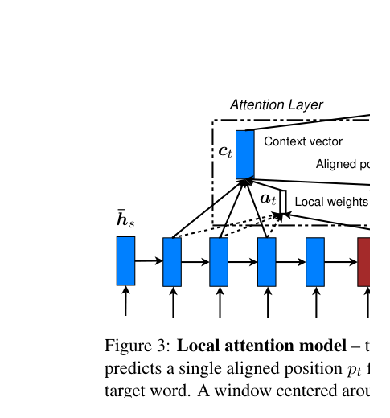

import torch
import torch.nn as nn
import torch.nn.functional as F
class Encoder(nn.Module):
def __init__(self, vocab_size, embed_dim, hidden_dim, num_layers=1, dropout=0.1):
super().__init__()
self.embedding = nn.Embedding(vocab_size, embed_dim)
self.rnn = nn.GRU(
embed_dim, hidden_dim,
num_layers=num_layers,
bidirectional=True, # 双向
batch_first=True,
dropout=dropout if num_layers > 1 else 0
)
# 将双向的隐藏状态压缩到单向维度
self.fc = nn.Linear(hidden_dim * 2, hidden_dim)
self.dropout = nn.Dropout(dropout)
def forward(self, src, src_lengths=None):
# src: [batch_size, src_len]
embedded = self.dropout(self.embedding(src)) # [batch, src_len, embed_dim]
if src_lengths is not None:
packed = nn.utils.rnn.pack_padded_sequence(
embedded, src_lengths.cpu(), batch_first=True, enforce_sorted=False
)
packed_outputs, hidden = self.rnn(packed)
outputs, _ = nn.utils.rnn.pad_packed_sequence(packed_outputs, batch_first=True)
else:
outputs, hidden = self.rnn(embedded)
# outputs: [batch, src_len, hidden_dim * 2] (双向拼接)
# hidden: [num_layers * 2, batch, hidden_dim]
# 合并前向和后向的最终隐藏状态
# hidden[-2] 是最后一层前向，hidden[-1] 是最后一层后向
hidden = torch.tanh(self.fc(torch.cat([hidden[-2], hidden[-1]], dim=1)))
# hidden: [batch, hidden_dim]
return outputs, hidden第6章：注意力机制的诞生与演进
从信息瓶颈到动态聚焦：Bahdanau加性注意力、Luong乘性注意力，以及注意力设计空间的系统探索
NLP
Attention
Seq2Seq
机器翻译
Bahdanau
Luong
注意力机制的完整故事：从Bahdanau打破Seq2Seq信息瓶颈，到Luong的系统性探索（加性vs乘性、全局vs局部、软vs硬），再到注意力独立于RNN的前奏。
核心问题：如何让解码器在生成每个词时，能够访问输入序列的不同部分，而不是只依赖一个压缩后的向量？进一步地，计算”注意力”的最佳方式是什么——加性、乘性、全局还是局部？
历史坐标：2014-2015 | Bahdanau, Cho, Bengio → Luong, Pham, Manning | 从注意力的诞生到系统性探索
1 从上一章说起
上一章我们见证了RNN的辉煌与困境。LSTM和GRU通过门控机制解决了梯度消失问题，Seq2Seq架构让神经网络能够处理翻译、摘要等序列到序列的任务。
但Seq2Seq有一个致命的设计缺陷：信息瓶颈。
回顾Seq2Seq的工作方式：编码器读取整个输入序列，将所有信息压缩到一个固定长度的上下文向量 \(\mathbf{c}\) 中；解码器仅凭这个向量，逐词生成输出。这意味着，无论输入是5个词还是50个词，所有信息都要塞进同一个维度的向量。
Sutskever等人(2014)的实验清楚地展示了这个问题：当输入句子超过20个词时，翻译质量急剧下降。更长的句子包含更多信息，而固定大小的向量无法承载。
让我们用一个具体的例子感受这个问题。考虑翻译任务：
英语：The agreement on the European Economic Area was signed in August 1992.
法语：L’accord sur la zone économique européenne a été signé en août 1992.
当解码器生成”août”（八月）时，它需要知道原文中的”August”。但在标准Seq2Seq中，“August”这个词首先被编码进隐藏状态，然后与其他所有词的信息混合在一起，最终压缩成上下文向量 \(\mathbf{c}\)。解码器要从这个压缩后的向量中”挖出”August的信息——这就像从一锅汤里找回原来的食材。
更糟糕的是，句子中的某些词对当前生成的词更重要。翻译”August”时，模型最需要关注的是原文中的”August”，而不是”The”或”was”。但标准Seq2Seq对所有输入位置一视同仁——它们都被同等地压缩进了 \(\mathbf{c}\)。
💡 本章核心洞察：解码器在生成每个词时，应该能够有选择地关注输入序列的不同位置。不同的输出词需要关注不同的输入词——这就是”注意力”的本质。本章将追溯注意力机制从诞生（Bahdanau, 2014）到系统性探索（Luong, 2015）的完整历程，揭示不同设计选择背后的权衡。
2 问题的本质是什么？
2.1 问题的精确定义
让我们形式化地描述Seq2Seq的信息瓶颈问题。
在标准Seq2Seq中，编码器产生一系列隐藏状态 \(\mathbf{h}_1^{enc}, \mathbf{h}_2^{enc}, \ldots, \mathbf{h}_T^{enc}\)，但只有最后一个状态 \(\mathbf{h}_T^{enc}\) 被传递给解码器作为上下文向量：
\[ \mathbf{c} = \mathbf{h}_T^{enc} \]
解码器的每一步都使用这同一个 \(\mathbf{c}\)：
\[ \mathbf{h}_t^{dec} = f(\mathbf{h}_{t-1}^{dec}, y_{t-1}, \mathbf{c}) \]
问题在于：\(\mathbf{c}\) 是一个静态的、全局的表示。它在解码的每一步都保持不变，无法根据当前生成的词动态调整。
从信息论的角度看，如果输入序列 \(\mathbf{x}\) 的信息熵是 \(H(\mathbf{x})\)，而 \(\mathbf{c}\) 的维度是 \(d\)，那么 \(\mathbf{c}\) 最多能携带 \(O(d)\) 的信息量。当 \(H(\mathbf{x}) > O(d)\) 时，信息丢失是不可避免的。
2.2 之前的尝试为何失败？
在Attention出现之前，研究者尝试过一些缓解信息瓶颈的方法：
增加上下文向量维度：直觉上，更大的 \(\mathbf{c}\) 可以携带更多信息。但这只是延缓问题，而非解决问题。而且更大的向量意味着更多参数，更容易过拟合。
使用双向RNN：让编码器同时从左到右和从右到左读取输入，然后拼接两个方向的最终隐藏状态。这确实能捕获更多上下文，但仍然是压缩到一个固定向量——只是这个向量稍微大了一点。
输入反转：Sutskever等人发现，将输入序列反转后再输入编码器，翻译效果更好。这是因为输入的最后几个词（反转后变成最先输入的词）与输出的最先几个词往往有更强的对应关系。但这只是一个启发式技巧，不能从根本上解决问题。
这些方法都没有触及问题的核心：解码器只能看到一个固定的、全局的表示，无法动态地访问输入的不同部分。
2.3 我们需要什么样的解决方案？
理想的解决方案应该具备以下特性：
- 动态性：解码器在生成不同词时，应该能够关注输入的不同位置
- 软选择：不是硬性地选择某一个位置，而是对所有位置计算一个重要性分布
- 端到端可训练：整个机制应该可以通过反向传播优化
- 可解释性：模型关注哪些位置应该是可以观察和理解的
这些特性正是Attention机制所提供的。
3 核心思想与直觉
3.1 关键洞察：动态的、基于内容的寻址
Attention的核心洞察可以用一句话概括：
让解码器在每一步都能”回头看”编码器的所有位置，并根据当前需要动态决定关注哪些位置。
这个想法听起来简单，但它彻底改变了序列到序列学习的范式。
3.2 直觉解释：聚光灯与图书馆
想象你在一个黑暗的图书馆里找书。传统Seq2Seq就像是：你先用手电筒快速扫过所有书架，然后关掉手电筒，仅凭记忆去取书。你对整个图书馆有一个模糊的整体印象，但细节很容易遗忘。
Attention机制则像是：你手里有一个可调节的聚光灯。当你需要找某本书时，你可以把聚光灯照向相关的书架，仔细查看那里的书名。不同的查询需求会让你把光照向不同的位置。
更具体地说，当解码器生成”août”（八月）这个词时，Attention机制会：
- 查看编码器的所有隐藏状态（图书馆的所有书架）
- 计算每个位置与当前任务的相关性（判断每个书架是否可能有你要的书）
- 把”聚光灯”主要照向相关的位置（“August”对应的编码器状态）
- 从这些位置汇总信息，辅助生成当前词
3.3 另一个类比：加权投票
你也可以把Attention理解为一种加权投票机制。
想象解码器是一个领导，需要做一个决定（生成下一个词）。它有一个顾问团队（编码器的各个隐藏状态），每个顾问掌握输入序列不同部分的信息。
传统Seq2Seq：只听一个”总顾问”的意见（上下文向量 \(\mathbf{c}\)），这个总顾问要综合所有人的信息。
Attention机制：直接征询每个顾问的意见，然后根据议题相关性给不同顾问的意见赋予不同权重，加权求和得出最终决定。
3.4 设计动机：为什么选择软注意力？
Attention机制有两种基本变体：
- 软注意力（Soft Attention）：对所有位置计算概率分布，加权求和
- 硬注意力（Hard Attention）：选择一个位置，只看那里的信息
Bahdanau等人选择了软注意力，原因是：
- 可微分：软注意力的加权求和是可微的，可以用标准的反向传播训练
- 稳定：硬注意力需要采样或强化学习方法训练，方差大，不稳定
- 信息更丰富：软注意力可以同时利用多个位置的信息，而不是非此即彼
硬注意力也有其优势（计算更高效，更稀疏），但在实践中，软注意力因其简单和有效成为了主流。我们将在后面的小节中更详细地对比两者。
4 技术细节
4.1 Bahdanau Attention：加性注意力
2014年，Bahdanau、Cho和Bengio提出了第一个成功的注意力机制用于机器翻译。让我们详细看看它是如何工作的。
首先，编码器使用双向RNN，在每个位置 \(j\) 产生一个隐藏状态：
\[ \mathbf{h}_j = [\overrightarrow{\mathbf{h}}_j; \overleftarrow{\mathbf{h}}_j] \]
其中 \(\overrightarrow{\mathbf{h}}_j\) 是前向RNN的隐藏状态，\(\overleftarrow{\mathbf{h}}_j\) 是后向RNN的隐藏状态。拼接后，\(\mathbf{h}_j\) 同时包含了位置 \(j\) 的左侧和右侧上下文。
在解码的第 \(i\) 步，我们计算一个动态的上下文向量 \(\mathbf{c}_i\)（注意：不再是固定的 \(\mathbf{c}\)，而是每一步都不同的 \(\mathbf{c}_i\)）：
\[ \mathbf{c}_i = \sum_{j=1}^{T_x} \alpha_{ij} \mathbf{h}_j \]
其中 \(\alpha_{ij}\) 是第 \(i\) 步解码时，对输入位置 \(j\) 的注意力权重。
那么 \(\alpha_{ij}\) 是怎么计算的呢？这是Attention机制的核心。
首先，计算一个对齐分数（alignment score） \(e_{ij}\)，衡量解码器当前状态与编码器位置 \(j\) 的相关性：
\[ e_{ij} = a(\mathbf{s}_{i-1}, \mathbf{h}_j) \]
其中 \(\mathbf{s}_{i-1}\) 是解码器在第 \(i-1\) 步的隐藏状态，\(a\) 是一个对齐模型（alignment model）。
Bahdanau使用了一个单层前馈网络作为对齐模型：
\[ e_{ij} = \mathbf{v}_a^\top \tanh(\mathbf{W}_a \mathbf{s}_{i-1} + \mathbf{U}_a \mathbf{h}_j) \]
这被称为加性注意力（additive attention），因为 \(\mathbf{s}_{i-1}\) 和 \(\mathbf{h}_j\) 是通过加法结合的。
然后，对所有位置的分数做softmax归一化，得到注意力权重：
\[ \alpha_{ij} = \frac{\exp(e_{ij})}{\sum_{k=1}^{T_x} \exp(e_{ik})} \]
softmax确保了：
- 所有权重都是正数：\(\alpha_{ij} > 0\)
- 权重之和为1：\(\sum_j \alpha_{ij} = 1\)
这样，\(\alpha_{ij}\) 可以解释为一个概率分布——解码器在第 \(i\) 步”关注”输入位置 \(j\) 的概率。
NoteAlgorithm: Bahdanau Attention (Bahdanau et al., 2015)
def bahdanau_attention(s_prev, encoder_outputs, W_a, U_a, v_a):
"""
Bahdanau (加性) 注意力机制
参数:
s_prev: 解码器上一步的隐藏状态 [batch, dec_hidden]
encoder_outputs: 编码器所有隐藏状态 [batch, src_len, enc_hidden]
W_a, U_a, v_a: 可学习参数
返回:
context: 上下文向量 [batch, enc_hidden]
attention_weights: 注意力权重 [batch, src_len]
"""
# Step 1: 计算对齐分数
# s_prev 广播到所有源位置
scores = v_a @ tanh(W_a @ s_prev + U_a @ encoder_outputs) # [batch, src_len]
# Step 2: Softmax 归一化
attention_weights = softmax(scores, dim=-1) # [batch, src_len]
# Step 3: 加权求和
context = attention_weights @ encoder_outputs # [batch, enc_hidden]
return context, attention_weightsSource: Bahdanau, Cho, & Bengio (2015) “Neural Machine Translation by Jointly Learning to Align and Translate”, ICLR 2015. arXiv:1409.0473
下图展示了带Bahdanau Attention的RNN Encoder-Decoder架构：

Source: Dive into Deep Learning, Figure 11.4.2. d2l.ai
4.2 完整数值示例：Bahdanau Attention计算
让我们用一个小例子走一遍完整的Attention计算过程。
设定：
- 输入序列：3个词（“I love NLP”），编码后得到3个隐藏状态
- 解码器隐藏状态维度：\(d_s = 4\)
- 编码器隐藏状态维度：\(d_h = 4\)
- 注意力中间维度：\(d_a = 3\)
编码器输出（假设已经计算好）：
\[ \mathbf{h}_1 = [0.2, 0.5, -0.3, 0.8]^\top \quad \text{("I")} \]
\[ \mathbf{h}_2 = [0.7, -0.2, 0.4, 0.1]^\top \quad \text{("love")} \]
\[ \mathbf{h}_3 = [-0.1, 0.6, 0.5, -0.4]^\top \quad \text{("NLP")} \]
解码器当前状态（正在生成第一个目标词）：
\[ \mathbf{s}_0 = [0.1, -0.3, 0.4, 0.2]^\top \]
参数（简化的随机值）：
\[ \mathbf{W}_a = \begin{bmatrix} 0.1 & -0.2 & 0.3 & 0.1 \\ 0.2 & 0.1 & -0.1 & 0.2 \\ -0.1 & 0.3 & 0.2 & -0.2 \end{bmatrix}, \quad \mathbf{U}_a = \begin{bmatrix} 0.2 & 0.1 & -0.2 & 0.3 \\ -0.1 & 0.2 & 0.1 & 0.1 \\ 0.3 & -0.1 & 0.2 & -0.1 \end{bmatrix} \]
\[ \mathbf{v}_a = [0.5, -0.3, 0.4]^\top \]
Step 1：计算 \(\mathbf{W}_a \mathbf{s}_0\)
\[ \mathbf{W}_a \mathbf{s}_0 = \begin{bmatrix} 0.1 \cdot 0.1 + (-0.2) \cdot (-0.3) + 0.3 \cdot 0.4 + 0.1 \cdot 0.2 \\ \vdots \end{bmatrix} = \begin{bmatrix} 0.21 \\ 0.03 \\ 0.04 \end{bmatrix} \]
Step 2：对每个编码器状态计算 \(\mathbf{U}_a \mathbf{h}_j\)
\[ \mathbf{U}_a \mathbf{h}_1 = [0.33, 0.14, -0.05]^\top \]
\[ \mathbf{U}_a \mathbf{h}_2 = [0.13, 0.06, 0.29]^\top \]
\[ \mathbf{U}_a \mathbf{h}_3 = [-0.15, 0.17, 0.05]^\top \]
Step 3：计算对齐分数 \(e_{1j}\)
\[ e_{11} = \mathbf{v}_a^\top \tanh(\mathbf{W}_a \mathbf{s}_0 + \mathbf{U}_a \mathbf{h}_1) = \mathbf{v}_a^\top \tanh([0.54, 0.17, -0.01]^\top) \]
\[ = [0.5, -0.3, 0.4] \cdot [\tanh(0.54), \tanh(0.17), \tanh(-0.01)]^\top \]
\[ = [0.5, -0.3, 0.4] \cdot [0.49, 0.17, -0.01]^\top = 0.24 - 0.05 - 0.004 \approx 0.19 \]
类似地计算 \(e_{12}\) 和 \(e_{13}\)：
\[ e_{12} \approx 0.25, \quad e_{13} \approx 0.08 \]
Step 4：Softmax归一化
\[ \alpha_{11} = \frac{\exp(0.19)}{\exp(0.19) + \exp(0.25) + \exp(0.08)} = \frac{1.21}{1.21 + 1.28 + 1.08} = \frac{1.21}{3.57} \approx 0.34 \]
\[ \alpha_{12} = \frac{1.28}{3.57} \approx 0.36, \quad \alpha_{13} = \frac{1.08}{3.57} \approx 0.30 \]
Step 5：计算上下文向量
\[ \mathbf{c}_1 = \alpha_{11} \mathbf{h}_1 + \alpha_{12} \mathbf{h}_2 + \alpha_{13} \mathbf{h}_3 \]
\[ = 0.34 \cdot [0.2, 0.5, -0.3, 0.8]^\top + 0.36 \cdot [0.7, -0.2, 0.4, 0.1]^\top + 0.30 \cdot [-0.1, 0.6, 0.5, -0.4]^\top \]
\[ \approx [0.29, 0.18, 0.09, 0.19]^\top \]
解读：在这个例子中，模型对”love”的关注最多（0.36），其次是”I”（0.34）和”NLP”（0.30）。注意力权重相对均匀，这可能是因为我们用的是随机参数。在训练后的真实模型中，权重分布会更加尖锐——模型会学会在需要时聚焦于特定位置。
4.3 解码器的完整流程
有了Attention机制，解码器的每一步工作流程变为：
- 计算注意力权重 \(\alpha_{ij}\)：基于当前解码器状态和所有编码器状态
- 计算上下文向量 \(\mathbf{c}_i\)：对编码器状态加权求和
- 更新解码器状态：结合上下文向量、前一步输出、前一步状态
\[ \mathbf{s}_i = f(\mathbf{s}_{i-1}, y_{i-1}, \mathbf{c}_i) \]
- 生成输出：基于新的解码器状态
\[ P(y_i | y_{<i}, \mathbf{x}) = g(\mathbf{s}_i, y_{i-1}, \mathbf{c}_i) \]
关键区别是：每一步都有一个不同的上下文向量 \(\mathbf{c}_i\)，它是根据当前任务动态计算的。
4.4 Luong Attention：乘性注意力的系统性探索
Bahdanau的加性注意力虽然有效，但它的计算量不小——每次计算对齐分数都需要一个前馈网络（两个矩阵乘法、一个非线性激活、一个向量点积）。一个自然的问题随之浮现：能否用更简单的操作来衡量两个状态的相关性？
2015年，距Bahdanau论文发表仅一年，斯坦福大学的Luong、Pham和Manning发表了一篇系统性的研究，回答了这个问题。他们提出了计算效率更高的乘性注意力（multiplicative attention），并系统比较了三种对齐函数：
| 名称 | 公式 | 参数 | 计算效率 |
|---|---|---|---|
| Dot | \(\mathbf{s}^\top \mathbf{h}\) | 无 | 最快 |
| General | \(\mathbf{s}^\top \mathbf{W}_a \mathbf{h}\) | \(\mathbf{W}_a\) | 中等 |
| Concat | \(\mathbf{v}_a^\top \tanh(\mathbf{W}_a [\mathbf{s}; \mathbf{h}])\) | \(\mathbf{v}_a, \mathbf{W}_a\) | 最慢 |
Dot（点积）：最简单的形式，直接计算两个向量的内积 \(e_{ij} = \mathbf{s}_i^\top \mathbf{h}_j\)。没有任何可学习参数，计算最快，但要求解码器和编码器的隐藏维度必须相同。直觉上，点积衡量的是两个向量的”相似度”——如果它们指向相似的方向，点积就大；如果正交，点积为零。
General（一般形式）：引入一个可学习矩阵 \(\mathbf{W}_a\)，允许不同维度的状态相互比较，也增加了模型的表达能力。实质上是问：“\(\mathbf{s}\) 和 \(\mathbf{W}_a \mathbf{h}\)（\(\mathbf{h}\) 的一个线性变换）有多相似？”
Concat（拼接）：这就是Bahdanau的加性注意力。表达能力最强——它可以学习任意非线性的对齐函数——但计算最慢。
除了对齐函数，Luong还发现了另一个重要的设计差异：注意力在解码器中的使用位置。
Bahdanau的方式是先算注意力再更新RNN状态：\(\mathbf{s}_i = f(\mathbf{s}_{i-1}, y_{i-1}, \mathbf{c}_i)\)。Luong的方式则更加模块化——先用RNN计算新状态，再基于新状态计算注意力：
\[ \mathbf{s}_i = f(\mathbf{s}_{i-1}, y_{i-1}) \] \[ \mathbf{c}_i = \text{Attention}(\mathbf{s}_i, \mathbf{H}) \] \[ \tilde{\mathbf{s}}_i = \tanh(\mathbf{W}_c [\mathbf{c}_i; \mathbf{s}_i]) \]
这种设计让RNN和Attention解耦，便于分析和调试。
NoteAlgorithm: Luong Attention Variants (Luong et al., 2015)
def luong_attention(decoder_state, encoder_outputs, method='dot', W_a=None, v_a=None):
"""
Luong 注意力机制的三种变体
参数:
decoder_state: 解码器当前隐藏状态 [batch, dec_hidden]
encoder_outputs: 编码器所有隐藏状态 [batch, src_len, enc_hidden]
method: 'dot', 'general', 或 'concat'
W_a: 可学习参数（general和concat需要）
v_a: 可学习参数（concat需要）
返回:
context: 上下文向量 [batch, enc_hidden]
attention_weights: 注意力权重 [batch, src_len]
"""
if method == 'dot':
# 点积: s^T h
# [batch, dec_hidden] @ [batch, enc_hidden, src_len] -> [batch, src_len]
scores = torch.bmm(decoder_state.unsqueeze(1),
encoder_outputs.transpose(1, 2)).squeeze(1)
elif method == 'general':
# 一般形式: s^T W h
# 先计算 W @ h: [batch, src_len, dec_hidden]
transformed = encoder_outputs @ W_a.T
scores = torch.bmm(decoder_state.unsqueeze(1),
transformed.transpose(1, 2)).squeeze(1)
elif method == 'concat':
# 拼接形式: v^T tanh(W [s; h])
# 扩展 decoder_state 到所有位置
s_expanded = decoder_state.unsqueeze(1).expand(-1, encoder_outputs.size(1), -1)
concat = torch.cat([s_expanded, encoder_outputs], dim=-1)
scores = v_a @ torch.tanh(concat @ W_a.T).transpose(1, 2)
scores = scores.squeeze(1)
# Softmax 归一化
attention_weights = F.softmax(scores, dim=-1)
# 加权求和
context = torch.bmm(attention_weights.unsqueeze(1), encoder_outputs).squeeze(1)
return context, attention_weightsSource: Luong, Pham, & Manning (2015) “Effective Approaches to Attention-based Neural Machine Translation”, EMNLP 2015. arXiv:1508.04025
4.5 三种对齐函数的数值对比
让我们用同一组数据，比较点积对齐和加性对齐的差异。
设定：
- 解码器状态：\(\mathbf{s} = [0.5, -0.3, 0.8, 0.2]^\top\)
- 编码器状态（3个位置）：
- \(\mathbf{h}_1 = [0.2, 0.4, 0.1, -0.3]^\top\)
- \(\mathbf{h}_2 = [0.6, -0.1, 0.7, 0.3]^\top\)
- \(\mathbf{h}_3 = [-0.2, 0.5, 0.3, 0.1]^\top\)
Dot-Product 计算：
\[ e_1 = \mathbf{s}^\top \mathbf{h}_1 = 0.5 \times 0.2 + (-0.3) \times 0.4 + 0.8 \times 0.1 + 0.2 \times (-0.3) \] \[ = 0.10 - 0.12 + 0.08 - 0.06 = 0.00 \]
\[ e_2 = \mathbf{s}^\top \mathbf{h}_2 = 0.5 \times 0.6 + (-0.3) \times (-0.1) + 0.8 \times 0.7 + 0.2 \times 0.3 \] \[ = 0.30 + 0.03 + 0.56 + 0.06 = 0.95 \]
\[ e_3 = \mathbf{s}^\top \mathbf{h}_3 = 0.5 \times (-0.2) + (-0.3) \times 0.5 + 0.8 \times 0.3 + 0.2 \times 0.1 \] \[ = -0.10 - 0.15 + 0.24 + 0.02 = 0.01 \]
Softmax 归一化：
\[ \alpha_1 = \frac{e^{0.00}}{e^{0.00} + e^{0.95} + e^{0.01}} = \frac{1.00}{1.00 + 2.59 + 1.01} = \frac{1.00}{4.60} \approx 0.22 \]
\[ \alpha_2 = \frac{e^{0.95}}{4.60} = \frac{2.59}{4.60} \approx 0.56 \]
\[ \alpha_3 = \frac{e^{0.01}}{4.60} = \frac{1.01}{4.60} \approx 0.22 \]
解读：使用点积注意力，模型将56%的注意力放在位置2，这是因为 \(\mathbf{h}_2\) 与 \(\mathbf{s}\) 在向量空间中最”相似”——它们的方向最为一致。注意，点积注意力不需要任何可学习参数，仅靠向量的几何关系就能区分出最相关的位置。而当 \(\mathbf{W}_a = \mathbf{I}\)（单位矩阵）时，General退化为Dot-Product；在一般情况下，\(\mathbf{W}_a\) 允许模型学习更复杂的相关性模式。
4.6 Global vs Local Attention
Luong还提出了另一个重要的设计维度：注意力的范围。
Global Attention 关注源序列的所有位置，这是Bahdanau的做法，也是前面讨论的默认方式：
\[ \mathbf{c}_i = \sum_{j=1}^{T_x} \alpha_{ij} \mathbf{h}_j \]
Local Attention 只关注源序列的一个窗口。核心思想是：在每个解码步，先预测一个对齐位置 \(p_i\)，然后只计算以 \(p_i\) 为中心、宽度为 \(2D+1\) 的窗口内的注意力：
\[ \mathbf{c}_i = \sum_{j=p_i-D}^{p_i+D} \alpha_{ij} \mathbf{h}_j \]
对齐位置 \(p_i\) 可以通过两种方式确定：
Local-m（单调）：假设源和目标大致对齐，简单设置 \(p_i = i\)。
Local-p（预测）：学习一个函数来预测 \(p_i\)：
\[ p_i = T_x \cdot \sigma(\mathbf{v}_p^\top \tanh(\mathbf{W}_p \mathbf{s}_i)) \]
其中 \(\sigma\) 是sigmoid函数，确保 \(p_i \in [0, T_x]\)。为了让注意力在窗口中心附近更集中，Local Attention还引入了一个高斯偏置：
\[ \alpha_{ij} = \text{align}(\mathbf{s}_i, \mathbf{h}_j) \cdot \exp\left(-\frac{(j - p_i)^2}{2\sigma^2}\right) \]

Source: Luong, Pham, & Manning (2015) “Effective Approaches to Attention-based Neural Machine Translation”, Figure 2 & 3. arXiv:1508.04025
4.7 Hard vs Soft Attention
除了Global/Local的维度，还有另一个基本区分：软注意力（Soft Attention） vs 硬注意力（Hard Attention）。
Soft Attention 计算所有位置的注意力权重（一个概率分布），然后加权求和：
\[ \mathbf{c}_i = \sum_j \alpha_{ij} \mathbf{h}_j = \mathbb{E}_{p(j | \mathbf{s}_i, \mathbf{H})}[\mathbf{h}_j] \]
Hard Attention 从注意力分布中采样一个位置 \(j^*\)，只使用那个位置的信息：
\[ j^* \sim \text{Categorical}(\alpha_{i1}, \alpha_{i2}, \ldots, \alpha_{iT_x}) \] \[ \mathbf{c}_i = \mathbf{h}_{j^*} \]
两者的核心区别在于可微分性。Soft Attention是可微分的——加权求和是一个连续操作，梯度可以通过 \(\alpha_{ij}\) 流向对齐函数的参数。Hard Attention不可微分——采样操作是离散的，需要强化学习方法（如REINFORCE）来训练，带来高方差和训练不稳定的问题。
WarningHard Attention的训练困难
Hard Attention虽然在概念上更接近人类的”注意”（我们真的只看一个地方，而不是模糊地看所有地方），但它的训练需要强化学习技术：
\[ \nabla_\theta J = \mathbb{E}_{j^* \sim p(j|\theta)} \left[ \nabla_\theta \log p(j^* | \theta) \cdot R(j^*) \right] \]
其中 \(R(j^*)\) 是选择位置 \(j^*\) 带来的”奖励”。这个梯度估计的方差很大，需要大量采样才能稳定。
实践中，Soft Attention几乎总是更好的选择，因为：
- 端到端可微分，训练简单
- 梯度估计没有方差问题
- 可以同时利用多个位置的信息
4.8 复杂度分析
不同注意力变体的计算复杂度汇总如下：
| 变体 | 对齐计算 | 总复杂度 |
|---|---|---|
| Global + Dot | \(O(T_x \cdot d)\) per step | \(O(T_x \cdot T_y \cdot d)\) |
| Global + General | \(O(T_x \cdot d^2)\) per step | \(O(T_x \cdot T_y \cdot d^2)\) |
| Global + Concat | \(O(T_x \cdot d^2)\) per step | \(O(T_x \cdot T_y \cdot d^2)\) |
| Local | \(O(D \cdot d)\) per step | \(O(D \cdot T_y \cdot d)\) |
其中 \(T_x\) 是源序列长度，\(T_y\) 是目标序列长度，\(d\) 是隐藏维度，\(D\) 是局部窗口大小。
与标准Seq2Seq相比，Global Attention增加了 \(O(T_x \cdot T_y)\) 的计算量，同时需要存储所有编码器隐藏状态（\(O(T_x \cdot d)\) 空间）。这是用空间换取性能的典型例子。Local Attention的优势在长序列时尤为明显：当 \(T_x = 1000\) 而 \(D = 50\) 时，计算量减少了20倍。
5 注意力可视化：模型在”看”什么？
5.1 对齐矩阵
Attention机制的一个美妙特性是可解释性。注意力权重 \(\alpha_{ij}\) 直接告诉我们：在生成第 \(i\) 个目标词时，模型关注了哪些源词。
我们可以把所有的注意力权重排列成一个矩阵，横轴是源序列，纵轴是目标序列。这个矩阵被称为对齐矩阵（alignment matrix）。

Source: Bahdanau, Cho, & Bengio (2015) “Neural Machine Translation by Jointly Learning to Align and Translate”, Figure 3. arXiv:1409.0473
5.2 对齐模式的语言学意义
通过观察对齐矩阵，我们可以发现一些有趣的语言学模式：
单调对齐：对于语序相似的语言对（如英语到德语的某些结构），对齐矩阵接近对角线——第1个源词对应第1个目标词，第2个对应第2个，依此类推。
语序调整：当源语言和目标语言的词序不同时，对齐矩阵会偏离对角线。例如，英语的”red car”翻译成法语是”voiture rouge”（车 红），对齐矩阵会显示交叉模式。
一对多和多对一：某些词没有直接对应，或一个词对应多个词。例如，英语的”going to”可能对应法语的单个词”va”。
空对齐：某些目标词（如冠词）可能没有明确的源词对应，它们的注意力权重会分散在多个位置。
5.3 可视化的局限性
虽然注意力可视化很吸引人，但我们要谨慎解读：
- 注意力不等于解释：高注意力权重不一定意味着模型”理解”了那个位置的内容
- 可能有多重因素：模型可能通过其他机制（如位置信息）做出决定
- 训练目标的影响：注意力权重是为了最小化翻译损失而学习的，不一定反映人类的对齐直觉
后来的研究（如Jain & Wallace, 2019）对注意力的可解释性提出了质疑。但作为一个诊断工具，注意力可视化仍然非常有价值。
6 工程实践：带Attention的Seq2Seq
让我们用PyTorch实现一个完整的带Attention的Seq2Seq模型，涵盖Bahdanau和Luong两种注意力机制。
6.1 编码器
6.2 Bahdanau Attention层
class BahdanauAttention(nn.Module):
def __init__(self, enc_hidden_dim, dec_hidden_dim, attention_dim):
super().__init__()
# 加性注意力的参数
self.W_a = nn.Linear(dec_hidden_dim, attention_dim, bias=False)
self.U_a = nn.Linear(enc_hidden_dim * 2, attention_dim, bias=False) # 双向编码器
self.v_a = nn.Linear(attention_dim, 1, bias=False)
def forward(self, decoder_hidden, encoder_outputs, mask=None):
"""
decoder_hidden: [batch, dec_hidden]
encoder_outputs: [batch, src_len, enc_hidden * 2]
mask: [batch, src_len], True表示需要mask的位置（padding）
"""
batch_size, src_len, _ = encoder_outputs.shape
# decoder_hidden 扩展到所有源位置
# [batch, dec_hidden] -> [batch, src_len, dec_hidden]
decoder_hidden = decoder_hidden.unsqueeze(1).repeat(1, src_len, 1)
# 计算对齐分数
# [batch, src_len, attention_dim]
energy = torch.tanh(self.W_a(decoder_hidden) + self.U_a(encoder_outputs))
# [batch, src_len, 1] -> [batch, src_len]
attention_scores = self.v_a(energy).squeeze(-1)
# 应用mask（将padding位置的分数设为很小的负数）
if mask is not None:
attention_scores = attention_scores.masked_fill(mask, -1e10)
# Softmax归一化
attention_weights = F.softmax(attention_scores, dim=1) # [batch, src_len]
# 计算上下文向量
# [batch, 1, src_len] @ [batch, src_len, enc_hidden*2] -> [batch, 1, enc_hidden*2]
context = torch.bmm(attention_weights.unsqueeze(1), encoder_outputs)
context = context.squeeze(1) # [batch, enc_hidden * 2]
return context, attention_weights6.3 解码器
class AttentionDecoder(nn.Module):
def __init__(self, vocab_size, embed_dim, enc_hidden_dim, dec_hidden_dim,
attention_dim, num_layers=1, dropout=0.1):
super().__init__()
self.vocab_size = vocab_size
self.attention = BahdanauAttention(enc_hidden_dim, dec_hidden_dim, attention_dim)
self.embedding = nn.Embedding(vocab_size, embed_dim)
# GRU输入是：embedded + context
self.rnn = nn.GRU(
embed_dim + enc_hidden_dim * 2, # 双向编码器
dec_hidden_dim,
num_layers=num_layers,
batch_first=True,
dropout=dropout if num_layers > 1 else 0
)
# 输出层
self.fc = nn.Linear(dec_hidden_dim + enc_hidden_dim * 2 + embed_dim, vocab_size)
self.dropout = nn.Dropout(dropout)
def forward(self, input_token, hidden, encoder_outputs, mask=None):
"""
单步解码
input_token: [batch] - 上一步的输出token
hidden: [1, batch, dec_hidden] - 上一步的隐藏状态
encoder_outputs: [batch, src_len, enc_hidden * 2]
"""
# Embedding
embedded = self.dropout(self.embedding(input_token)) # [batch, embed_dim]
# Attention
# hidden[-1] 取最后一层，[batch, dec_hidden]
context, attention_weights = self.attention(hidden[-1], encoder_outputs, mask)
# 拼接embedded和context作为RNN输入
rnn_input = torch.cat([embedded, context], dim=1).unsqueeze(1) # [batch, 1, embed+ctx]
# RNN
output, hidden = self.rnn(rnn_input, hidden)
output = output.squeeze(1) # [batch, dec_hidden]
# 输出层
prediction = self.fc(torch.cat([output, context, embedded], dim=1))
return prediction, hidden, attention_weights6.4 完整的Seq2Seq模型
class Seq2SeqAttention(nn.Module):
def __init__(self, encoder, decoder, device):
super().__init__()
self.encoder = encoder
self.decoder = decoder
self.device = device
def forward(self, src, trg, teacher_forcing_ratio=0.5):
"""
src: [batch, src_len]
trg: [batch, trg_len]
"""
batch_size = src.shape[0]
trg_len = trg.shape[1]
trg_vocab_size = self.decoder.vocab_size
# 存储输出
outputs = torch.zeros(batch_size, trg_len, trg_vocab_size).to(self.device)
attentions = []
# 编码
encoder_outputs, hidden = self.encoder(src)
# hidden: [batch, dec_hidden] -> [1, batch, dec_hidden]
hidden = hidden.unsqueeze(0)
# 第一个解码输入是 <sos> token
input_token = trg[:, 0]
for t in range(1, trg_len):
prediction, hidden, attention = self.decoder(
input_token, hidden, encoder_outputs
)
outputs[:, t] = prediction
attentions.append(attention)
# Teacher forcing
teacher_force = torch.rand(1).item() < teacher_forcing_ratio
top1 = prediction.argmax(1)
input_token = trg[:, t] if teacher_force else top1
return outputs, torch.stack(attentions, dim=1)
# 创建模型示例
device = torch.device('cuda' if torch.cuda.is_available() else 'cpu')
encoder = Encoder(vocab_size=10000, embed_dim=256, hidden_dim=512)
decoder = AttentionDecoder(
vocab_size=10000, embed_dim=256,
enc_hidden_dim=512, dec_hidden_dim=512, attention_dim=256
)
model = Seq2SeqAttention(encoder, decoder, device).to(device)
print(f"编码器参数: {sum(p.numel() for p in encoder.parameters()):,}")
print(f"解码器参数: {sum(p.numel() for p in decoder.parameters()):,}")
print(f"总参数: {sum(p.numel() for p in model.parameters()):,}")编码器参数: 5,450,240
解码器参数: 23,639,056
总参数: 29,089,2966.5 Luong Attention实现
class LuongAttention(nn.Module):
"""
Luong 注意力机制，支持三种对齐方式
"""
def __init__(self, enc_hidden_dim, dec_hidden_dim, method='dot'):
super().__init__()
self.method = method
self.enc_hidden_dim = enc_hidden_dim
self.dec_hidden_dim = dec_hidden_dim
if method == 'general':
self.W_a = nn.Linear(enc_hidden_dim, dec_hidden_dim, bias=False)
elif method == 'concat':
self.W_a = nn.Linear(enc_hidden_dim + dec_hidden_dim, dec_hidden_dim, bias=False)
self.v_a = nn.Linear(dec_hidden_dim, 1, bias=False)
def forward(self, decoder_state, encoder_outputs, mask=None):
"""
decoder_state: [batch, dec_hidden]
encoder_outputs: [batch, src_len, enc_hidden]
mask: [batch, src_len], True表示padding位置
"""
batch_size, src_len, _ = encoder_outputs.shape
if self.method == 'dot':
# 点积: s^T h
# 需要 dec_hidden == enc_hidden
scores = torch.bmm(
decoder_state.unsqueeze(1), # [batch, 1, dec_hidden]
encoder_outputs.transpose(1, 2) # [batch, enc_hidden, src_len]
).squeeze(1) # [batch, src_len]
elif self.method == 'general':
# 一般形式: s^T W h
# W 将 enc_hidden 映射到 dec_hidden
transformed = self.W_a(encoder_outputs) # [batch, src_len, dec_hidden]
scores = torch.bmm(
decoder_state.unsqueeze(1),
transformed.transpose(1, 2)
).squeeze(1)
elif self.method == 'concat':
# 拼接形式: v^T tanh(W [s; h])
decoder_expanded = decoder_state.unsqueeze(1).expand(-1, src_len, -1)
concat = torch.cat([decoder_expanded, encoder_outputs], dim=-1)
energy = torch.tanh(self.W_a(concat)) # [batch, src_len, dec_hidden]
scores = self.v_a(energy).squeeze(-1) # [batch, src_len]
# 应用 mask
if mask is not None:
scores = scores.masked_fill(mask, -1e10)
# Softmax
attention_weights = F.softmax(scores, dim=-1)
# 上下文向量
context = torch.bmm(
attention_weights.unsqueeze(1),
encoder_outputs
).squeeze(1)
return context, attention_weights6.6 Local Attention实现
class LocalAttention(nn.Module):
"""
Luong 的 Local Attention（预测型）
"""
def __init__(self, enc_hidden_dim, dec_hidden_dim, window_size=10):
super().__init__()
self.window_size = window_size # D: 窗口半径
self.enc_hidden_dim = enc_hidden_dim
# 位置预测网络
self.W_p = nn.Linear(dec_hidden_dim, dec_hidden_dim)
self.v_p = nn.Linear(dec_hidden_dim, 1)
# 对齐函数（使用 general）
self.W_a = nn.Linear(enc_hidden_dim, dec_hidden_dim, bias=False)
# 高斯标准差
self.sigma = window_size / 2
def forward(self, decoder_state, encoder_outputs, mask=None):
"""
decoder_state: [batch, dec_hidden]
encoder_outputs: [batch, src_len, enc_hidden]
"""
batch_size, src_len, _ = encoder_outputs.shape
device = decoder_state.device
# Step 1: 预测对齐位置 p
# p = S * sigmoid(v^T tanh(W_p s))
p = src_len * torch.sigmoid(
self.v_p(torch.tanh(self.W_p(decoder_state)))
).squeeze(-1) # [batch]
# Step 2: 计算所有位置的对齐分数
transformed = self.W_a(encoder_outputs) # [batch, src_len, dec_hidden]
scores = torch.bmm(
decoder_state.unsqueeze(1),
transformed.transpose(1, 2)
).squeeze(1) # [batch, src_len]
# Step 3: 应用高斯窗口
# 生成位置索引 [0, 1, 2, ..., src_len-1]
positions = torch.arange(src_len, device=device).float()
positions = positions.unsqueeze(0).expand(batch_size, -1) # [batch, src_len]
# 高斯权重: exp(-(j - p)^2 / (2 * sigma^2))
gaussian = torch.exp(-((positions - p.unsqueeze(1)) ** 2) / (2 * self.sigma ** 2))
# Step 4: 窗口mask（只保留 [p-D, p+D] 范围内的位置）
window_mask = (positions >= (p.unsqueeze(1) - self.window_size)) & \
(positions <= (p.unsqueeze(1) + self.window_size))
# 应用窗口mask
scores = scores.masked_fill(~window_mask, -1e10)
# Step 5: Softmax + 高斯加权
attention_weights = F.softmax(scores, dim=-1) * gaussian
# 重新归一化
attention_weights = attention_weights / (attention_weights.sum(dim=-1, keepdim=True) + 1e-10)
# 上下文向量
context = torch.bmm(
attention_weights.unsqueeze(1),
encoder_outputs
).squeeze(1)
return context, attention_weights, p6.7 对比实验
# 创建测试数据
batch_size = 2
src_len = 10
enc_hidden = 64
dec_hidden = 64
encoder_outputs = torch.randn(batch_size, src_len, enc_hidden)
decoder_state = torch.randn(batch_size, dec_hidden)
# 测试三种 Luong Attention
for method in ['dot', 'general', 'concat']:
attn = LuongAttention(enc_hidden, dec_hidden, method=method)
context, weights = attn(decoder_state, encoder_outputs)
print(f"{method:8s}: context shape = {context.shape}, weights sum = {weights.sum(dim=-1)}")
# 测试 Local Attention
local_attn = LocalAttention(enc_hidden, dec_hidden, window_size=3)
context, weights, p = local_attn(decoder_state, encoder_outputs)
print(f"{'local':8s}: context shape = {context.shape}, predicted p = {p.tolist()}")dot : context shape = torch.Size([2, 64]), weights sum = tensor([1., 1.])
general : context shape = torch.Size([2, 64]), weights sum = tensor([1., 1.], grad_fn=<SumBackward1>)
concat : context shape = torch.Size([2, 64]), weights sum = tensor([1.0000, 1.0000], grad_fn=<SumBackward1>)
local : context shape = torch.Size([2, 64]), predicted p = [5.452468395233154, 5.0841288566589355]6.8 关键实现细节
Mask处理：在实际应用中，batch中的序列长度不同，需要padding。计算注意力时，padding位置不应该获得任何权重。我们通过mask将这些位置的分数设为很大的负数，softmax后它们的权重趋近于0。
Teacher Forcing：训练时，解码器的输入可以是真实的上一个词（teacher forcing）或模型预测的词。teacher_forcing_ratio 控制两者的混合比例。较高的比例加速训练，但可能导致exposure bias。
双向编码器：我们使用双向GRU，编码器输出的维度是 hidden_dim * 2。这让每个位置都包含完整的上下文信息。
7 深入理解
7.1 为什么Attention有效？——理论视角
信息论视角：标准Seq2Seq的上下文向量 \(\mathbf{c}\) 是输入 \(\mathbf{x}\) 的一个充分统计量（sufficient statistic）——如果 \(\mathbf{c}\) 完美，它应该包含关于 \(\mathbf{y}\) 的所有必要信息。但在实践中，有限维度的 \(\mathbf{c}\) 无法做到这一点。Attention通过让解码器访问所有的 \(\mathbf{h}_j\)，实际上是在说：不要求一个充分统计量，而是让模型在需要时直接查询原始信息。这绕过了信息瓶颈。
记忆寻址视角：可以把编码器的隐藏状态看作一个外部记忆（external memory），每个 \(\mathbf{h}_j\) 是一个记忆槽。Attention机制实现了基于内容的软寻址（content-based soft addressing）——根据当前查询（解码器状态）检索相关的记忆。这个视角后来被显式化为Memory Networks和Neural Turing Machine。
梯度流视角：从优化角度，Attention提供了一条从解码器到编码器特定位置的直接路径。在标准Seq2Seq中，梯度要从解码器流回编码器，必须经过 \(\mathbf{c}\)，再经过整个编码过程。Attention创造了”捷径”——梯度可以通过注意力权重直接传到相关的编码器位置。
7.2 为什么点积注意力能工作？
点积注意力的有效性可以从多个角度理解。
余弦相似度视角：当向量被归一化后，点积就是余弦相似度：
\[ \mathbf{s}^\top \mathbf{h} = \|\mathbf{s}\| \|\mathbf{h}\| \cos(\theta) \]
余弦相似度是衡量两个向量”方向一致性”的经典指标。神经网络在训练过程中，会学习让相关的状态指向相似的方向。
核方法视角：点积可以看作一个线性核（linear kernel）。在核方法的框架下，注意力权重实际上是在一个特征空间中计算相似度。General Attention引入的可学习矩阵 \(\mathbf{W}_a\) 相当于学习一个Mahalanobis距离。
信息检索视角：点积注意力可以类比为向量空间模型中的查询-文档匹配。解码器状态是”查询”，编码器状态是”文档”，点积衡量查询与文档的相关性。
7.3 为什么需要缩放？
Luong的论文没有讨论这个问题，但后来的Transformer论文（Vaswani et al., 2017）指出了点积注意力的一个潜在问题。
当向量维度 \(d\) 很大时，点积的方差会很大。假设 \(\mathbf{s}\) 和 \(\mathbf{h}\) 的每个分量都是独立的、均值为0、方差为1的随机变量，那么：
\[ \text{Var}(\mathbf{s}^\top \mathbf{h}) = d \]
当 \(d = 512\) 时，点积的标准差是 \(\sqrt{512} \approx 22.6\)。这意味着点积可能产生很大的正值或负值，导致softmax输出接近one-hot分布，梯度变得很小。
解决方案是缩放：
\[ \text{score}(\mathbf{s}, \mathbf{h}) = \frac{\mathbf{s}^\top \mathbf{h}}{\sqrt{d}} \]
这就是Transformer中的Scaled Dot-Product Attention。Luong的论文使用的维度较小（500左右），问题不太明显；但在Transformer的大维度设置下，缩放变得必要。这个设计选择将在第8章Transformer中发挥核心作用。
7.4 边界条件与失效模式
单调对齐假设：Bahdanau Attention隐含假设源和目标之间存在某种对齐关系。对于翻译任务这通常成立，但对于某些任务（如摘要），这个假设可能不成立——摘要需要整合分散在各处的信息，而不是”对齐”到特定位置。
复杂度限制：当源序列很长时（如文档级翻译），计算所有位置的注意力权重变得昂贵。\(O(T_x \cdot T_y)\) 的复杂度在 \(T_x = 10000\) 时是不可接受的。Local Attention是一种缓解方案，但窗口大小的选择需要根据任务调整。
分布偏移：训练时，解码器看到的上下文向量分布与推理时可能不同（因为teacher forcing）。这可能导致注意力权重在推理时不够准确。
Dot-Product的维度限制：解码器和编码器的隐藏维度必须相同，否则无法计算点积。General Attention通过引入 \(\mathbf{W}_a\) 解除了这个限制，但增加了参数量。
Local Attention的位置预测错误：如果位置预测函数学习不好，会系统性地错过重要信息。对于语序差异大的语言对，局部窗口可能覆盖不到正确位置。
8 局限性与展望
经过Bahdanau（2014）和Luong（2015）的工作，注意力机制已经在机器翻译中确立了核心地位。但两个根本性的局限逐渐浮现，指向更深层的问题。
注意力仍然是RNN的”附属品”。无论是Bahdanau还是Luong的注意力，都是Seq2Seq架构的增强组件。编码和解码的核心仍然依赖RNN。这意味着顺序计算无法避免——RNN必须逐步处理序列，无法并行。虽然Attention缓解了长距离依赖问题，但RNN本身的梯度流困难并没有根本解决。
注意力只在编码器-解码器之间。当前的Attention只让解码器关注编码器。但一个更自然的问题是：编码器内部的各个位置能否相互关注？ 一个词的理解可能依赖于同一句话中的其他词（例如代词的指代消解），而当前的架构没有提供这种”自我关注”的机制。
位置信息是隐式的。Attention本身不包含位置信息。位置信息完全依赖RNN的顺序处理来隐式编码。如果抛弃RNN，位置信息将完全丢失——这暗示未来的架构需要某种显式的位置编码方案。
这些局限引发了两个深刻的问题。第一：能否让Attention独立于RNN？ 如果Attention如此有效，为什么还需要RNN作为载体？第二：能否让序列中的每个位置相互关注？ 如果注意力不局限于编码器-解码器之间，而是扩展到同一序列内——这就是Self-Attention（自注意力）。
下一章将揭晓答案。Self-Attention让每个位置都能直接与其他所有位置交互，不再需要RNN作为中介。而在此之后的Transformer架构（第8章）将彻底兑现”Attention Is All You Need”的承诺——完全抛弃循环结构，用纯粹的注意力机制构建整个模型。
从加性到乘性，从全局到局部，从RNN的附属到独立的核心——注意力机制走过了从”辅助工具”到”架构基石”的完整历程。Bahdanau打破了信息瓶颈，Luong拓展了设计空间，而真正的革命还在后面。
9 本章小结
Important核心要点
- 问题：Seq2Seq的信息瓶颈——所有输入信息压缩到一个固定向量，导致长序列信息丢失
- 洞察：解码器应该能够动态地、有选择地关注输入的不同位置；进一步地，注意力的计算方式可以多样化
- Bahdanau (2014)：加性注意力打破了固定向量的限制，大幅提升了长序列翻译质量
- Luong (2015)：系统比较了dot/general/concat三种对齐函数和global/local两种范围策略，确立了点积注意力的效率优势
- 意义：注意力从Seq2Seq的”补丁”发展为核心组件，为后续的Self-Attention和Transformer奠定了基础
9.1 关键公式速查
Bahdanau加性注意力：
\[ e_{ij} = \mathbf{v}_a^\top \tanh(\mathbf{W}_a \mathbf{s}_{i-1} + \mathbf{U}_a \mathbf{h}_j) \]
Dot-Product Attention：
\[ \text{score}(\mathbf{s}, \mathbf{h}) = \mathbf{s}^\top \mathbf{h} \]
General Attention：
\[ \text{score}(\mathbf{s}, \mathbf{h}) = \mathbf{s}^\top \mathbf{W}_a \mathbf{h} \]
注意力权重：
\[ \alpha_{ij} = \frac{\exp(e_{ij})}{\sum_{k=1}^{T_x} \exp(e_{ik})} \]
上下文向量：
\[ \mathbf{c}_i = \sum_{j=1}^{T_x} \alpha_{ij} \mathbf{h}_j \]
Local Attention位置预测：
\[ p_i = T_x \cdot \sigma(\mathbf{v}_p^\top \tanh(\mathbf{W}_p \mathbf{s}_i)) \]
10 思考题
[概念理解] 为什么说Attention实现了”软寻址”？它与计算机内存的硬寻址有什么本质区别？这种软寻址的优势和劣势是什么？
[数学推导] 点积注意力和加性注意力在表达能力上有什么本质区别？设计一个简单的例子，展示加性注意力能学习而点积注意力无法学习的相关性模式。更一般地，如果General Attention中 \(\mathbf{W}_a = \mathbf{U}\mathbf{V}^\top\)（秩-\(r\)分解），这对注意力模式有什么影响？
[工程实践] 在实现Attention时，为什么要对padding位置应用mask？如果不做mask会有什么后果？如何正确实现mask（考虑数值稳定性）？
[批判思考] Local Attention假设对齐是大致单调的（源和目标的位置对应）。对于哪些语言对或任务，这个假设会严重失效？能否设计一种”非单调局部注意力”？
[开放问题] Hard Attention虽然训练困难，但它有一个优势：稀疏性可以提高可解释性。有没有方法既保持Soft Attention的可微分性，又能获得接近Hard Attention的稀疏性？（提示：考虑稀疏softmax、Gumbel-softmax）
11 延伸阅读
11.1 核心论文（必读）
- [Bahdanau et al., 2015] Neural Machine Translation by Jointly Learning to Align and Translate
- Attention机制在NMT中的开创性工作
- 重点读：Section 3（模型架构）、Section 5（可视化分析）
- arXiv: 1409.0473
- [Luong et al., 2015] Effective Approaches to Attention-based Neural Machine Translation
- 系统比较不同注意力变体，确立设计准则
- 重点读：Section 3（Global vs Local）、Section 4（实验对比）
- arXiv: 1508.04025
11.2 理论基础
- [Graves et al., 2014] Neural Turing Machines
- 提出了基于内容的软寻址，是Attention的理论先驱
- 重点读：Section 3.1（Attention机制）
11.3 后续发展
- [Vaswani et al., 2017] Attention Is All You Need
- 提出Scaled Dot-Product Attention和Multi-Head Attention，完全抛弃RNN
- 本教材第8章的核心内容
- arXiv: 1706.03762
- [Xu et al., 2015] Show, Attend and Tell
- Hard Attention在图像描述中的应用，对比Soft和Hard Attention的效果
- arXiv: 1502.03044
11.4 注意力可解释性
- [Jain & Wallace, 2019] Attention is not Explanation
- 质疑Attention权重作为解释的可靠性
- arXiv: 1902.10186
- [Wiegreffe & Pinter, 2019] Attention is not not Explanation
- 对上述论文的回应，更细致地讨论Attention的解释性
- arXiv: 1908.04626
11.5 大规模实证对比
- [Britz et al., 2017] Massive Exploration of Neural Machine Translation Architectures
- 大规模对比NMT的各种设计选择，包括注意力变体的实证对比
- arXiv: 1703.03906
12 历史注脚
Attention机制的灵感部分来自人类视觉系统。当我们看一幅复杂的图像时，我们不会同时处理所有像素，而是会”聚焦”在感兴趣的区域。这种选择性注意（selective attention）是认知科学研究的经典课题。
Bahdanau在2014年将这个思想引入神经机器翻译时，并没有预料到它会成为深度学习最核心的组件之一。在论文中，他们谦虚地称之为”对齐模型”（alignment model），而不是”注意力”。“Attention”这个术语是后来被社区广泛采用的。
仅一年后，斯坦福的Luong、Pham和Manning发表了系统性的探索工作。他们不仅提出了计算更高效的乘性注意力，更重要的是系统性地比较和总结了当时的各种方法，为后来者提供了清晰的设计指南。有趣的是，Luong论文中提到的点积注意力因为过于简单而在当时没有受到太多关注——主流仍然偏好参数化的对齐函数。但两年后，当Transformer论文提出”Scaled Dot-Product Attention”时，点积注意力终于登上了历史舞台的中央。
从某种意义上说，这两篇论文共同完成了Attention发展的第一阶段：Bahdanau开创了注意力机制，Luong拓展了设计空间并建立了系统性的理解。然而，一个更大胆的想法正在酝酿：如果Attention如此强大，我们是否还需要RNN？下一章将讲述Self-Attention的诞生，而不久之后，Vaswani等人将给出决定性的回答——“Attention Is All You Need”。这篇论文不仅在技术上革新了序列建模，其标题本身也成为了深度学习历史上最具影响力的金句之一。